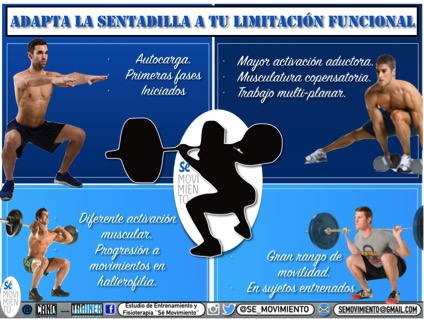

Contenido
1 Sentadilla con barra alta 2 Sentadilla con barra baja 3 Sentadilla de sumo 4 Sentadilla zercher 5 Sentadilla con barra frontal 6 Sentadilla pistola o squat pistol. 7 Sentadilla libre 8 Sentadilla isométricaLas sentadillas es uno de los ejercicios para trabajar tren inferior más utilizado. No solo en disciplinas como el cuturismo, fitness, o crossfit, tambien es uno de los ejerrcicios estrella de deportes como power lifting, body pump.
Dependiendo de la colocación y apertura de los pies, la barra etc permieten focalizar más en unos músculos u otros. Son un ejercicio básico, muy completo y que requieren de una técnica para no ser lesivos.
Entonces, ¿qué tipos de sentadillas podemos encontrar?
Cada una tiene sus particularidades y un diferencias a la hora de ser ejecutada.
Se realizan con el uso de una barra, previamente colocado en un rack para permitir la colocación de discos y movilidad. Escoge una altura adecuada de manera que no tengas que utilizar tus gemelos y elevar los talones para sacar la barra.
Se sitúa la barra sobre los trapecios y se sujeta con las manos de manera cómoda y los codos hacia atrás y hacia abajo. Evita que la barra pueda caer.
Para realizarla, mantén la espalda recta y comienza a descender. Por el movimiento natural del cuerpo, es normal que se desplace hacia delante. La cadera debe superar a las rodillas. Si tu rango de movilidad lo permite, trata de crear un angulo inferior a 90º.
Las rodillas no deben rotar hacia dentro.
Los músculos involucrados principalmente en la sentadilla trasera son el cuadriceps y el glúteo.
Las s entadillas con barra baja tienen una ejecución muy similar a las anteriores, salvo por la colocación de la barra. Se debe colocar en el deltoides posterior. También comenzaremos con la barra colocada en un rack .
Al realizar la bajada, el tronco se inclinará hacia delante de manera natural. Recuerda mantener la espalda en la p osición correcta y erguida . Los pies deben estar separados al ancho de las caderas y mirando ligeramente hacia fuera.
Por lo general, permite mover mayores cargas que otro tipo de sentadilla.
Los músculos involucrados son los glúteos, isquiotibiales y espalda baja. La carga está más repartida y no recae completamente sobre los cuadriceps.
En este tipo de sentadilla , los pies se colocan a una distancia más abierta que la de los hombros, mucho más que en una sentadilla convencional o que cualquiera de los dos tipos mencionados previamente. Los pies deben estar mirando hacia fuera.
La movilidad de cada persona determinará la capacidad para bajar en mayor o menor medida. Trata de mantener el tronco firme. Evita que vaya hacia delante.
Puede realizarse con barra y discos , mancuernas o ketlebells que sostendremos con los brazos hacia abajo.
La sentadilla de sumo en la que el principal trabajo muscular recae sobre los abductores y glúteos. También trabaja cuadriceps e isquiotibiales.
Es un tipo de sentadilla que se caracteriza porque la carga va situada en la zona alta de los antebrazos junto con los biceps.
Es importante mantener el tronco en posición vertical y sin inclinarse excesivamente hacia delante.
La barra se coloca, en vez de en un rack, en un soporte de press banca.
Uno de los factores limitantes a la hora de realizar este ejercicio, es que va a verse influenciado por la carga que soporten los brazos. Puede no ser el mejor ejercicio para fuerza e hipertrofia .
El trabajo esta mas orientado en general a trabajar todo el cuerpo y no solo tren inferior.
En la sentadilla frontal la barra se coloca en la parte delantera, por debajo del cuello. La barra se colocará previamente en un rack a una altura adecuada. Al no estar colocada en la espalda, no ejerce presión sobre las vertebras.
En este tipo se trabaja la zona abdominal y los músculos superiores de la espalda. Requieren más estabilidad de la zona central.
El trabajo recae principalmente sobre los cuadriceps y liberando carga de los glúteos.
Este tipo de sentadilla se realiza sobre una pierna. Requiere mucha fuerza, equilibrio y flexibilidad.
El peso se sitúa sobre una pierna y se va descendiendo de manera controlada estirando la pierna y los brazos. Es un ejercicio que requiere de una gran fuerza y exigencia. Se puede realizar de manera progresiva, empezando con un a poyo sobre una superficie o soporte. Paulatinamente ir soltándonos según vayamos ganado la fuerza necesaria. Una vez consigamos soltarnos, podemos añadir cargas externas.
Se trabajan los músculos de los cuadriceps, glúteos e isquiotibiales. También involucra el core. Se consigue con este tipo de sentadilla , no solo una mejora de la fuerza en el tren inferior, si no también en equilibrio y movilidad.
La sentadilla libre o sentadilla clásica es aquella que se realiza con el propio peso corporal. Los pies deben estar orientados a la anchura de los hombros y ligeramente abiertos.
La espalda se debe mantener recta, según vamos descendiendo. Mantenemos las rodillas en la posición inicial sin que se vayan hacia dentro.
Permite trabajar con el peso corporal, adquirir una buena técnica y progresivamente ir añadiendo pesos y permitir la realización de otro tipo de sentadillas.
La sentadilla isométrica se realiza sin ejercer movimiento. Se basa en ejercer tensión sobre los músculos. Evita el riesgo de lesión debido a que no existe un movimiento en las articulaciones.
Se debe tratar de formar un á ngulo de 90º con la altura de las rodillas y la cadera. Se puede realizar con la ayuda de una pared, apoyando la espalda o sin ella si ya tenemos cierta técnica y experiencia.
Una vez seamos capaces de aguantar una cantidad de tiempo significativa podemos añadir cargas externas.
Puede realizarse en casa de manera sencilla ya que no es imprescindible material.
4.5 / 5 ( 4 votos ) Lucia F. 16 de diciembre de 2020 11:13:50 © Copyright 2012 - | Nutrimarket
